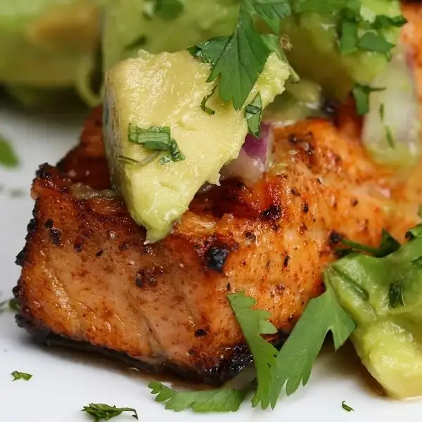

One-Pan Garlic Butter Salmon

Experience the magic of a one-pan wonder with this scrumptious Garlic Butter Salmon recipe. Perfectly cooked salmon fillets are nestled in a heavenly garlic butter sauce, making for a quick and easy weeknight meal that's sure to impress!
Ingredients
- 6 oz salmon fillet(170 g), 4 fillets
- ½ cup butter(115 g), melted
- 3 cloves garlic
- ½ lemon, juiced
- salt, to taste
- pepper, to taste
- 4 cups broccoli floret(900 g)
- olive oil
- ¼ cup parmesan cheese(30 g)
- fresh parsley, to garnish
Steps
- Preheat oven to 375°F (190°C).
- In a bowl, mix butter, garlic, lemon juice, salt, and pepper.
- Lay salmon fillets on a pan, and evenly distribute the marinade.
- Place broccoli on both sides of the salmon, and drizzle on olive oil, salt, pepper, and parmesan.
- Bake 18 minutes.
- Serve and garnish with parsley.